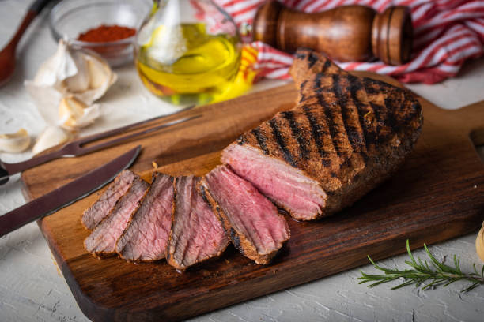

Santa Maria Tri-tip

The town of Santa Maria, California, is home to one of America's most delicious barbecue specialties: black-on-the-outside, pink-on-the-inside, grilled beef tri-tip steak. The tri-tip is cut from the bottom sirloin, and if cooked properly produces a very flavorful, extremely juicy piece of beef.
Ingredients
- 1 (2 1/2 pound) beef tri-tip roast
- 2 teaspoons garlic powder
- 1 1/2 teaspoons paprika
- 1 teaspoon onion powder
- 1 teaspoon dried rosemary
- 1/4 teaspoon cayenne pepper
- 1/3 cup red wine vinegar
- 1/3 cup vegetable oil
- 4 cloves crushed garlic
- 1/2 teaspoon Dijon mustard
Process
- Stir salt, black pepper, garlic powder, paprika, onion powder, rosemary, and cayenne pepper together in a bowl. Place beef in a glass baking dish and coat beef on all sides with spice mixture. Cover the dish with plastic wrap and refrigerate for 4 hours.
- Combine vinegar, vegetable oil, crushed garlic, and Dijon mustard together in a sealable container. Cover the container and shake to blend ingredients.
- Remove beef from refrigerator, uncover, and let sit at room temperature for 30 minutes.
- Preheat an outdoor grill for high heat, and lightly oil the grate.
- Place meat on preheated grill and brush with garlic-vinegar mixture. Cook meat for 4 minutes, flip, and baste. Repeat the flip and baste process every 4 minutes until beef starts to firm and is reddish-pink and juicy in the center, 25 to 30 minutes total. An instant-read thermometer inserted into the center should read 130 degrees F (54 degrees C). Let rest for at least 10 minutes before slicing.
Back to recipes